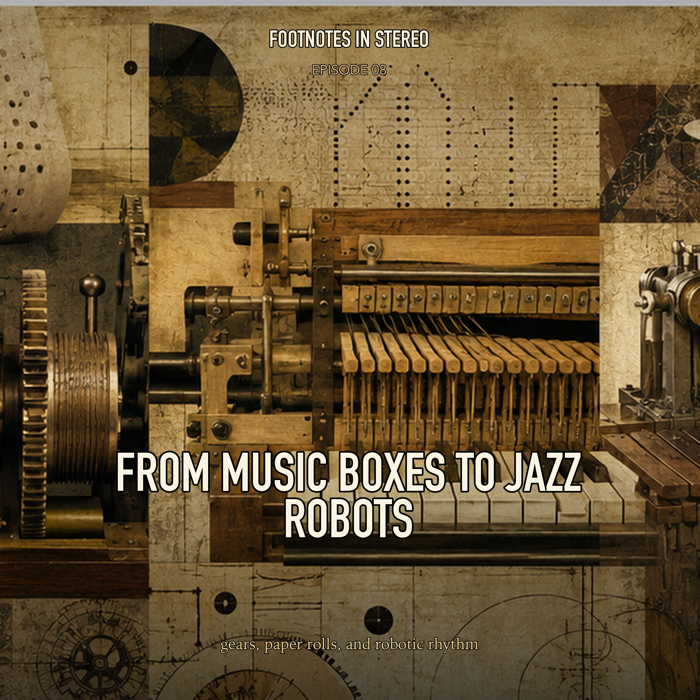

Episode 8 · Public episode
From Music Boxes to Jazz Robots
Long before playlists and sequencers, machines were already learning how to play: pinned cylinders, music boxes, barrel organs, automata, player pianos, punch rolls, robotic marimbas, and full mechanical ensembles. Mira and Theo follow the strange, beautiful history of music that performs itself, from domestic parlor technology to modern robotic musicianship. Created with Gemini Notebook.
Sources
- A History of the Music Box
- DIGITIZING NORTH INDIAN MUSIC: Preservation and Extension using Multimodal Sensor Systems, Machine Learning and Robotics - Mistic
- Interactive Improvisation with a Robotic Marimba Player - Guy Hoffman
- Mechanical Music - The Musical Box Society of Great Britain
- Mechanical organ - Wikipedia
- Morris Steinert Collection of Musical Instruments | Yale School of Music
- Pat Metheny: One Man's Band - Profile - All About Jazz
- The Biomorphic Automata of the 18th Century. Mechanical Artworks as Objects of Technical Fascination and Epistemological Exhibit
- Ulysses Pianola | Penn English
- "This Will Play Your Piano": Automation, Amateur Musicianship, and the Player Piano - Cornell eCommons
Transcript
Machine transcript; lightly formatted and subject to correction.
Transcript processing. Check back shortly.